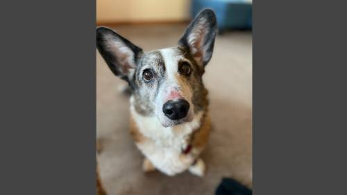
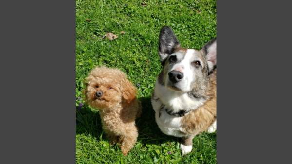
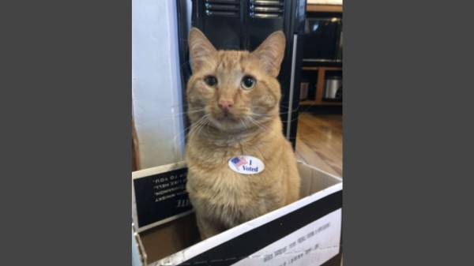

Jacob Hawkins - Lab 3
This is Lab 3 of CMWEB 110
For Lab 3 I'd like to show you my animals and tell you a few things about them!
Bailey

- Bailey is a Cardigan Welsh Corgi mix that we got when she was just 6 months old. She is now 13 years old and as happy as ever.
- Bailey loves belly rubs and rolling in the grass, but absolutely hates baths and nail clippers. She also hates when Winston comes within 5 feet of her.
- Here is a link to information on Cardigan Welsh Corgis. Check it out if you're interested!
Toby & Bailey

- This is Toby on the left and Bailey on the right.
- Toby is a 2 year old toy poodle that we got in 2019.
- He's a yapper and always has lots of energy he needs to get out, so we make sure he gets lots of time outside chasing whatever his heart desires.
- Here's some info on toy poodles!
Winston

- This is my cat Winston. He is an orange domestic shorthiar that we adopted last year.
- He loves to lay on everyone's belly and can't get enough chin scratches.
- Winston hates belly rubs but loves to pur for hours while his humans scratch his head.
- This link will take you to some more information on domestic shorthair cats.
That's all for lab 3! Click the link below to see the rest of my projects and labs.